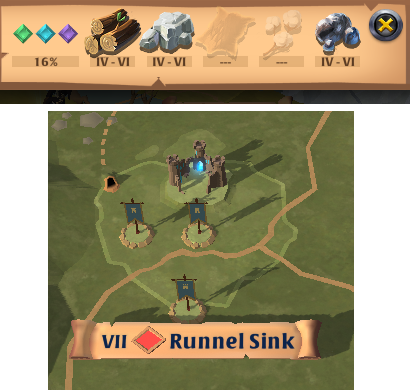

The world of Albion Online is made of 2 main continents: the Royal Continent, where you start, is smaller and in the south. The Outlands, much larger, is the continent in the North. On the top right of the map view, you can select multiple viewing options: Faction Warfare (for the Royal Continent), Political view for Guilds/Alliances, Prime Time, and Siphoning Mages for the Outlands.
The world map also allows you to see what a region contains, such as static dungeons, territories, world bosses, faction warfare castles, etc...
If you zoom in enough, you can see that the map is made of plenty of different regions. Each region is associated to a tier, from I to VIII, a color, and a biome.
Color is associated to "difficulty". In blue zones, only consensual PVP is allowed. In yellow zones, you can "flag up" to attack other players, but being "killed" only downs you, you don't lose your stuff and just get back up after some time. In red zones, if you flag up you can attack anyone, and dying will result in a loss of gear (some will drop, some will "trash", meaning destroyed for good). Those 3 difficulties are found on the Royal Continent. BlackZones are restricted to the outlands, you don't need to flag up to attack people, all deaths are permanent (like in RedZones), you do not see how many people are in the region on your minimap, and people may place hideouts and capture territories, outposts and castles.
Biomes and tier determine which ressource you will find. For a region of tier X, you will find ressources of tier X and 2 below. In a tier 7 region, you will find T5-6-7 ressources. Each biome has 3 ressources in it, including 1 "main" ressources. For the "main" ressource, "aspects" can spawn, mobs that, once killed, can be mined as a regular ressource node. The list of different biomes and associated ressources/aspects can be found on the Albion Wiki.
Color is often associated to a "ressource tier". Blue zones only go up to tier 4, yellow zones are tier 5, red zones are tier 6. Only BlackZones have tier 8 ressources, but blackzones can be of any tier. Also note that the region tier can occasionally differ from the ressources, for exemple, some red zones are marked as "T7", but only have up to T6 ressources. Usually those regions host a world boss, and some don't even have any ressource in them.
The Royal Continent is where you will start your adventure. It is made of 5 provinces, each with a city, in a ring around the 6th city, Caerleon. Each city possesses a bank, a market, player-owned building to build items, expedition nodes, a portal to the outlands, etc... Each province is centered around a specific biome. For exemple, the province of Gleinmoor around the city of Martlock is of the "Highlands" biome.
Each city has different crafting bonuses. By clicking on the city on the world map, you may click on the small arrow at the top right to find all the different crafting bonuses.
You can go from any city to any other by going through blue zones, or in a shorter path through yellow zones. YZs are only really dangerous if you are "faction flagged", so it's not dangerous to go through there. Caerleon is a bit special in that it is surrounded by Red Zones. There are some shortcuts around it that will get you to the city through its underground tunnels (the dashed lines), but you will still need to go through at least 3 RedZones from any other city, so come prepared!
Reputation impacts which region you can enter. Your reputation goes up by PvE activities in the Royal Continent, but goes down by killing people with positive reputation in Yellow and Red zones. More info about reputation can be found on the Albion wiki.
The Outlands is a very dangerous place, as almost every region in it is BlackZone. You won't see enemies unless they come into direct view, or "blob" on the minimap (groups of 10 players or more will make a red circle appear on the minimap), and any death will result into permanent loss of equipment and anything you have in your inventory.
To go to the Outlands, you need to either use the city portals, or use the Roads of Avalon, which we will dive into later. Each city has a portal that will get you to the Outlands, and the end portals are visible on the minimap as shining beacons.
Portals "tie" you to a city. If you use the Martlock portal, you will only be able to use that portal. If you travel to Thetford and try to use this portal, you won't be able to go through it. The only way to change your portal is to travel through the outlands, to the other city, and use the portal in the direction of the Royal Continent. Doing so will however tie you to that new city. It is possible to remove that binding once every 7 days. There is also a Portal Lock, if you go through one city portal to the Outlands, you can only use that portal back for 10 minutes. Caerleon lost its city portal when the Avalonian Roads were introduced.
The Outlands is where guild/alliance warfare happens. If you come from Eve Online, think of it as NullSec. I won't detail the mechanics here, but be aware that it might be a bad idea to enter a region where a battle is currently happening.
Also take note that biomes in the Outlands don't follow rules, so you can easily find swamp and mountain biomes around the Martlock portal, even though Martlock is in the highland regions in the Royal Continent. It is also the only place where you can find T7 and T8 ressources, although you may find some in the Roads of Avalon.
The Roads of Avalon are very similar to BlackZones, but they don't have "fixed gates". Portals will randomly spawn accross the game's regions and can get you to the Roads. If you are familiar with Eve Online, it is this game's equivalent to Wormholes.
Portals exist in different flavors. By hovering them on your minimap, you can see the destination, the number of players that can go through (here, up to 7 people, but 6 already went through, so only one more can go), when does it reset (here, in 3 minutes and 19 seconds, after which 7 person can once again go through) and when it despawns (in 12h21min). Unlike in Eve, those portals cannot be "crippled" and force them to close permanently, only temporarily.
Inside a Road, you are as vulnerable as in BlackZones. However, there are main "Roads" (hence the name) that give you speed bonuses. As people have cooldowns when they dismount, you might be able to get away from foes just by speeding. Outside of those roads, you can find mobs to kill, and sometimes chests might spawn, something like an overworld dungeon. After defeating the mobs, you can access a chest with good rewards. But those chests will also attract other people, so be careful...
Albion Online and all associated designs, logos, and images are the intellectual property of Sandbox Interactive.